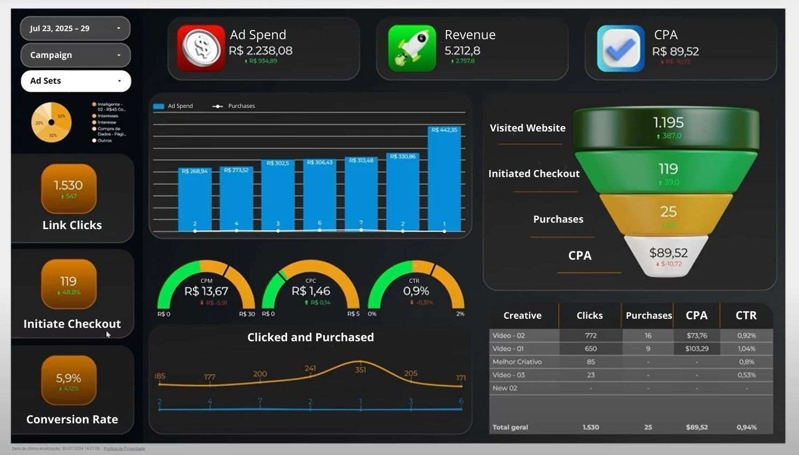
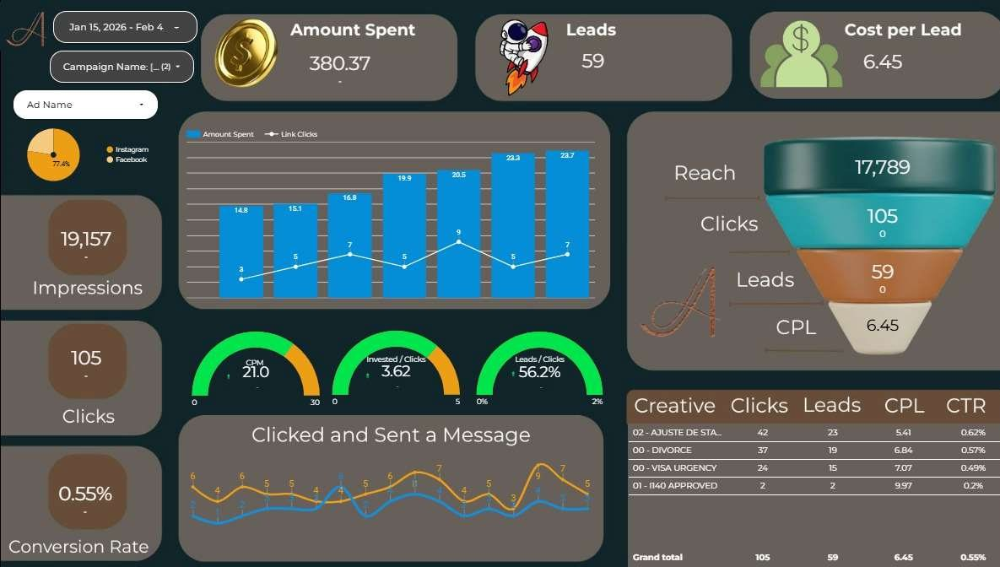
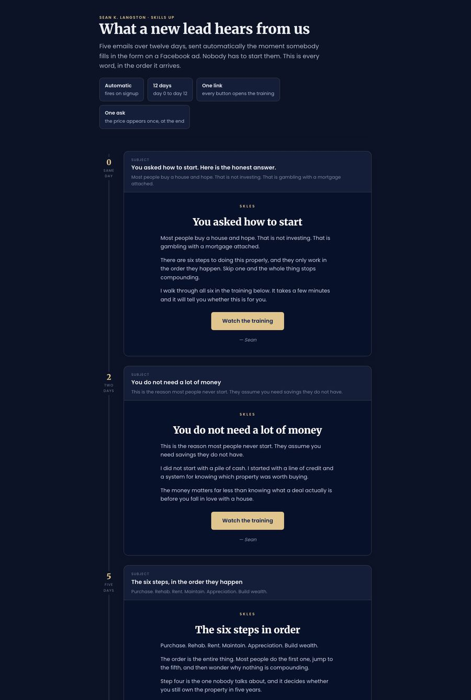
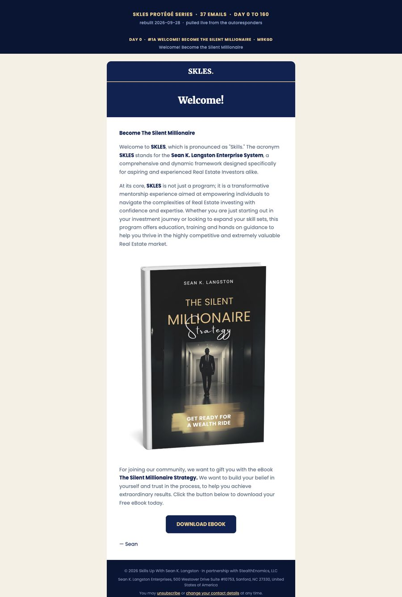
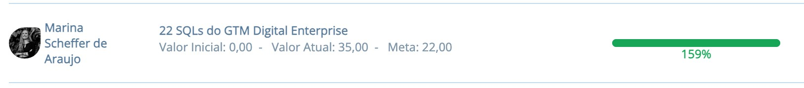
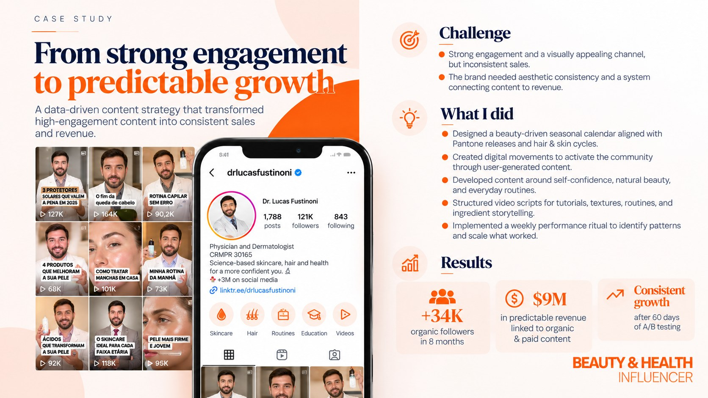

Paid ads that end in a sale or a lead you can call
I structure, launch and read the campaigns, and an ad is only judged on what happens after the click. Some of these accounts are mine, others we run at Moove, the studio I run with Higor. See the full ads portfolio
R$2,238 in ads, R$5,212 in sales in one week
A purchase campaign tracked from the visit to the checkout to the sale. The table by ad showed one video bringing 16 of the 25 purchases at the lowest cost, so the budget followed it.


Live dashboard, one week in July 202559 leads in three weeks at $6.45 each
One ad per type of case, each opening a conversation with the firm. The attorney sees the cost per lead by case type every week, so she knows what the budget is buying.


Jan 15 to Feb 4, 2026Ad costs rose 85% in a month. The creative kept a lead at about $7.
Four ads on an instant form, each with a different job. When the price of reach went from $36 to $67 per thousand, the click rate climbed from 7.7% to 11.8%, so the cost per lead only moved from $6.42 to $7.02. The account's August campaign had paid $25.77.


Conversations on WhatsApp
Three years in one account for an immigration service in New York and Massachusetts: R$68k across 26 campaigns, about R$34 per conversation. Moove client.
Webinar registrations in a month
A Traffic campaign had spent $451 for zero tracked registrations. Rebuilt on the conversion objective: $13.91 per registration.
Every purchase reported back
Stripe takes payment off site, so the success page sends the sale and its value back. The campaign optimises on buyers, and buyers leave the prospecting ads.
Flows, end to end
The piece that usually breaks is the handoff between two tools. These are six flows I built or ran, from the first touch to the sale, with what each one produced.
Lead form to paying member, with no human step
- Facebook adinstant form + timing question
- Zapierphone formatted, list mapped
- HubSpotcall queue, ready leads first
- 5 emails12 days, GetResponse
- Training pagepixel + buy button
- Stripeupgrade offered at checkout
- Enrol serviceunlocks the course, fires Purchase
- Onboarding26 or 37 emails
Webinar: the list goes first, the ads fill the gap
- Meta adconversion objective
- Registration pageregistration is the event
- Email list invited first89% of them showed up
- Live session15 attended, target 10
Ad to purchase, with the sale read by creative
- Video + static adssales objective
- Website1,195 visits
- Checkout119 started
- Purchase eventwith its value
- Dashboard by adbudget moves to the seller
One ad per case type, straight into a conversation
- Ad per casedivorce, visa, status
- Message opensno form to fill
- Conversation with the firmthe lead is counted here
- Weekly dashboardcost per lead by case type
Inbound lifecycle, tagged by stage
- Ebook, template, podcastentry points
- HubSpotevery asset tagged top, middle, bottom
- Nurture by stagecopy I wrote
- Hand raisenot a demo request
- Salesfirst and converting touch both credited
Cold outreach, one sequence per sector
- Sector listSales Navigator, Apollo, Lusha
- Email + LinkedIna case from that sector first
- Follow-upsseveral channels, same contact
- Short interviewquestions per role
- Sales callonly qualified people
Email sequences & automation
Written in the client's voice, triggered by what the person actually did, and measured by what it brings in: calls booked, people who show up, purchases.
Five emails that start the second someone fills in a Facebook lead form
The ads were bringing leads in, but they were landing on a list with no emails attached. I rebuilt the path: a new instant form, a Zapier step into GetResponse, and a twelve-day automation that walks the lead to the training page.
- Each email has one job and one button. The price shows up once, in the last one.
- Written first person, signed by the founder, and checked line by line for voice.
- Recovered by hand the leads that had arrived before the fix.


Lead sequence · day 0 to 1263 onboarding emails moved from manual autoresponders to automations that fire on the purchase
The team used to add each buyer to the right sequence by hand. Now the payment tags the contact, and the right series starts on its own: 26 emails for the entry membership, 37 over 160 days for the premium programme.
- Fixed the spacing between sends and restored an email that had dropped out of the series.
- Someone who upgrades at checkout gets only the premium welcome, never both.


Premium onboarding · 37 emailsAn email flow doesn't stop at the inbox. The same lists and tags decide who sees which ad, and the ads get told who actually bought.
No-shows get a second chance
Everyone who registered for two webinars and didn't attend became a Meta audience, so the replay and the next date reach them as ads as well as emails.
Buyers stop seeing the ad
The checkout's success page tells Meta about every purchase and its value. Buyers drop out of the prospecting ads and into onboarding, and the campaign optimises on sales instead of clicks.
Interest becomes a list
People who watched the training page but didn't buy are grouped for 180 days, ready for a follow-up campaign the moment the audience is big enough.
Show-up from the email list
For a B2B webinar, people invited by email attended at 89%. People who came from paid ads attended at 28%.
Sequences per offer, not one
For a small business software launch: a nurture into the offer, then separate onboarding for each sign-up path (12 and 10 emails), so each person gets the follow-up for what they asked for.
How long clients stay
Broadcasts, welcome series, launches and segmented flows, kept running and improved for years, not set up and left.
Landing pages
Written and built from scratch, wired to the form, the CRM and the conversion tag before they go live.


Data, weekly notes & the KPIs that matter
I'm the one watching the numbers. You get a live dashboard to look at whenever you like, and a written note every week that tells you what to do about them.
One page instead of four logins
Live dashboards that pull from Meta Ads, Facebook, Instagram, LinkedIn, YouTube and the CRM every few hours, with a search box that answers questions about the data, so nobody exports a spreadsheet and the decision happens before the money is spent.
- Every post gets an automatic reading at 24, 48 and 72 hours.
- Goals come from the account's own medians, not industry averages.
- Flags on what needs attention, so nobody reads a wall of numbers.
- For email I report leads, calls booked, attendance, buyers and revenue per email. Opens are only there to catch a deliverability problem.

A weekly note, not a wall of numbers
Each week: where we are against the goal, then what to stop, change or watch, ranked by how much money it moves. One page, written so you can act on it in five minutes.
The KPIs it tracks are the ones that pay the bills: cost per lead, lead to call or registration rate, show-up rate, cost per buyer, revenue per email and payback. Opens, likes and impressions only appear when they explain one of those.
How I test and improve
Every account runs on a growth board: the funnel read step by step, every idea scored before anyone builds it, and each test written down with its win condition before it starts. Nothing changes just because it felt right that week.
Find the widest gap
The funnel is measured at each step, from the ad to the payment. The step that loses the most people gets the next test, not the step that is easiest to change.
Score every idea
Each idea gets 0 to 10 on cost, odds of working and impact. The average sets the order, so the next test is chosen by its score and the owner of each step is named.
Decide the win first
Every test starts with a baseline, one metric and the result that counts as a win, then dated readings until it is called. When a step cannot be measured, the first test is the measurement.
| Step of the funnel | What usually gets tested there |
|---|---|
| The ad | The hook against the qualifier, one angle against another, video against static, and how many concepts the campaign can feed. |
| The form or landing page | How many questions, whether to qualify or maximise volume, what the thank-you screen promises, where the button sits. |
| The offer page | The price above or below the video, the length of the video, proof near the button, one call to action or two. |
| The emails | On which day the price appears, subject lines, sender name, send time, and one link per email against several. |
| The checkout | Payment options, the upgrade offered at checkout, and what happens on the page right after payment. |
| The follow-up | How fast a lead is called, who gets called first, and when a call is worth less than a better self-serve path. |
Websites
Written and built by me, from the first page to the domain.


Sites I designed and built to show range across industries. Custom imagery, no templates.


Earlier work
Before freelancing I ran growth inside companies, from B2B tech to health.
Took a video company to market as an AI and automation consultancy
I ran the go-to-market for the repositioning, and the pipeline behind it. The brand was built around Sambatalks, a podcast with 100+ executive guests that reached the top 5 Brazilian tech podcasts in 2022, and C-Level Talks, closed-door events with a guest list of about 50 C-levels from companies like Nubank, Santander, Visa and Dasa.
Behind that sat the funnel: an inbound lifecycle in HubSpot, tagged by stage, and an outbound motion with one sequence per sector that booked about 25 calls a month from cold leads.



From strong engagement to predictable growth
Dr. Lucas Fustinoni had a channel people loved and sales that came and went, with nothing linking the content to revenue. I rebuilt it around what actually moved his patients: a seasonal calendar, content that got the community making its own, structured video scripts, and a weekly ritual to read what performed and scale it. The scoring and testing method I still use on every account started here.


@drlucasfustinoniCorporate training company
Qualified pipeline for a B2B corporate learning company, with 170+ opportunities and lifetime value up 98%.
First World Cup NFT album · 2022
Brand launch and community for a new collectibles game, from zero to more than 20,000 members.
My own agency · 2020
Recurring clients from zero, and break-even in four months.
How I work
Every stage, one owner
I write the strategy and run the ads, pages, email and automation myself. Social media content stays with your team or a creator, and I plan it so it feeds the funnel.
A written note every week
Async by default: a short note on the numbers and the next moves, a live dashboard, and short videos when something needs showing. No status calls needed.
Tested, then handed over
I buy, sign up and fill in the form myself, on every path, before I tell you it works. Then you get a written guide to what runs where, so anyone on your team can keep it going.